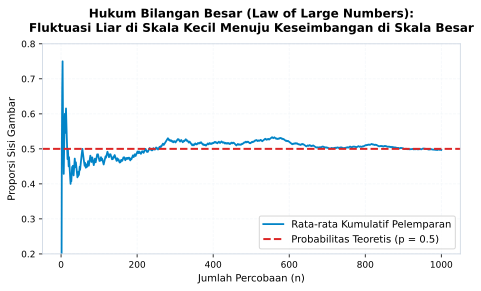

6 Laboratorium Visual di Atas Layar
“Ketika sebuah konsep abstrak yang tadinya hanya hidup sebagai formula beku di papan tulis mendadak bergerak, bereaksi secara langsung terhadap sentuhan tangan kita, dan menampakkan pola keteraturannya di depan mata, saat itulah dinding kebekuan nalar runtuh seketika.”
6.1 Melampaui Batas Lembar Kertas
Di sebuah laboratorium komputer universitas pada suatu siang, sekelompok mahasiswa duduk mengelilingi sebuah layar monitor. Di layar tersebut, sebuah program simulasi visual sederhana sedang berjalan. Program itu mensimulasikan pelemparan dua buah dadu bermata enam secara berulang-ulang dengan kecepatan seratus kali pelemparan per detik.
Pada detik-detik pertama, grafik batang di layar memperlihatkan bentuk yang acak dan kacau balau: angka tiga mendadak melonjak tinggi, angka sembilan tertinggal jauh di bawah, dan garis distribusi tampak compang-camping tanpa pola yang jelas. Beberapa mahasiswa yang baru pertama kali belajar teori peluang mulai berkomentar: “Lihat, teori distribusi normal itu ternyata tidak terbukti di dunia nyata. Angkanya melompat ke mana-mana sesuka hati!”
Namun, sang dosen hanya tersenyum tenang seraya meminta mereka tetap mengamati layar tanpa menyentuh tombol apa pun. Sepuluh detik berlalu, jumlah pelemparan dadu melesat melampaui angka lima ribu kali.
Perlahan namun pasti, sebuah keajaiban keteraturan visual mulai tersingkap di depan mata mereka: puncak batang di angka tujuh perlahan meninggi dengan anggun, diapit secara simetris oleh angka enam dan delapan, lalu melandai teratur ke arah angka dua di ujung kiri dan angka dua belas di ujung kanan. Kurva lonceng yang sempurna (bell curve) terbentuk dari tumpukan ribuan peristiwa acak.
Mahasiswa yang tadinya ragu terdiam dalam takjub. Formula kombinatorika rumit yang selama ini mereka hafal dengan setengah hati untuk menghadapi ujian mendadak bermutasi menjadi kenyataan visual yang hidup. Mereka tidak lagi sekadar mempercayai rumus karena diperintahkan oleh buku teks; mereka telah menyaksikannya sendiri dengan mata kepala mereka.
Pengalaman transformatif semacam inilah yang tidak pernah mampu dihadirkan oleh lembar kertas statis. Layar digital interaktif, jika dirancang dengan didaktika yang tepat, bukanlah sekadar alat hiburan atau pengganti mesin ketik, melainkan sebuah laboratorium eksperimen nalar (laboratory of thought). Layar digital adalah jembatan intuisi (bridge of intuition) yang menghubungkan keterbatasan imajinasi manusia dengan keagungan hukum keteraturan matematika.
6.2 Menyingkap Hukum Bilangan Besar (Law of Large Numbers)
Landasan filosofis dan matematis paling fundamental di balik kekuatan simulasi visual adalah Hukum Bilangan Besar (Law of Large Numbers / LLN). Hukum ini pertama kali dibuktikan secara matematis oleh matematikawan asal Swiss, Jakob Bernoulli, dalam adikaryanya Ars Conjectandi yang diterbitkan pada tahun 1713 setelah kematiannya.
Secara formal, Hukum Bilangan Besar menyatakan bahwa apabila sebuah percobaan acak diulang secara independen dalam jumlah yang sangat banyak (\(n \to \infty\)), maka nilai rata-rata sampel (\(\bar{x}_n\)) akan berkonvergensi secara probabilistik mendekati nilai harapan teoretisnya (\(\mu\)).
Dalam formulasi Hukum Lemah Bilangan Besar (Weak Law of Large Numbers) yang dirintis oleh Bernoulli dan diperluas oleh Khinchin, hubungan limit ini dituliskan sebagai:
\[\lim_{n \to \infty} P(|\bar{x}_n - \mu| < \epsilon) = 1 \quad \text{untuk setiap } \epsilon > 0\]
Formula limit probabilitas di atas menyatakan bahwa untuk sembarang bilangan positif \(\epsilon\) sekecil apa pun yang kita tetapkan, peluang bahwa selisih antara rata-rata sampel dengan nilai harapan sesungguhnya lebih kecil dari \(\epsilon\) akan mendekati angka satu (pasti terjadi) seiring ukuran sampel bertambah menuju tak hingga.
Lebih mendalam lagi, matematikawan legendaris asal Rusia, Andrey Kolmogorov, pada tahun 1933 membuktikan Hukum Kuat Bilangan Besar (Strong Law of Large Numbers). Jika hukum lemah berbicara mengenai peluang pada setiap irisan sampel berukuran besar secara terpisah, hukum kuat berbicara mengenai keseluruhan lintasan sejarah data dari awal hingga akhir. Kolmogorov membuktikan konvergensi hampir pasti (almost sure convergence):
\[P\left(\lim_{n \to \infty} \bar{x}_n = \mu\right) = 1\]
Formula Kolmogorov ini menyampaikan sebuah kepastian asimtotik yang agung: tidak peduli seberapa liar fluktuasi acak yang terjadi di awal percobaan, peluang bahwa rata-rata kumulatif akan menyimpang dari nilai harapan sejatinya dalam jangka panjang mendekati nol. Dalam ruang waktu yang membentang luas, penyimpangan hanyalah riak kecil sesaat yang terserap kembali ke dalam samudra keseimbangan seiring bertambahnya pengamatan.
Bagi mereka yang hanya membaca formula aljabar di atas kertas, teks matematika tersebut tampak kaku dan dingin. Namun, perhatikan bagaimana konsep agung ini berbicara ketika divisualisasikan dalam grafik konvergensi dinamis pada Figure 6.1.

Sebagaimana tampak jelas pada Figure 6.1, grafik tersebut membagi realitas data ke dalam dua zona kognitif yang sangat kontras. Batas-batas zona berikut adalah parameter ilustrasi simulasi pedagogis, bukan hukum universal: konvergensi Hukum Bilangan Besar bersifat asimtotik dan bergantung pada kondisi percobaan, bukan garansi pada jumlah sampel tertentu.
6.2.1 Zona Turbulensi Skala Kecil (Ilustrasi Simulasi: \(n < 50\))
Pada fase awal pelemparan koin (di mana probabilitas teoretis sisi gambar adalah \(p = 0{,}5\)), garis rata-rata kumulatif melompat liar dari angka \(0{,}2\) ke \(0{,}8\). Di zona ini, faktor keacakan murni (pure random noise) memegang kendali penuh. Lebar lompatan ini bukanlah cacat koin, melainkan konsekuensi aritmetika sampel kecil: setiap lemparan individual menyumbang porsi besar terhadap rata-rata kumulatif sehingga satu hasil ekstrem langsung mengayunkan garis.
Seorang pengamat yang tergesa-gesa menarik kesimpulan pada tahap ini akan tertipu mentah-mentah. Jika koin kebetulan menghasilkan sisi angka empat kali berturut-turut, ia akan menyimpulkan secara salah bahwa koin tersebut telah dimanipulasi. Di dunia bisnis rintisan atau evaluasi program baru di sekolah, kepanikan manajemen paling sering terjadi di zona turbulensi kecil ini: pimpinan buru-buru membatalkan inovasi bagus hanya karena hasil pada dua pekan pertama memperlihatkan fluktuasi yang mengecewakan.
6.2.2 Zona Konvergensi Keseimbangan (Ilustrasi Simulasi: \(n > 500\))
Namun, perhatikan apa yang terjadi ketika jumlah pengamatan terus bertambah menembus ratusan dan ribuan kali. Gelombang liar itu perlahan melandai, merapat, dan akhirnya berbaring tenang tepat di atas garis merah probabilitas teoretis \(0{,}5\). Tidak ada kekuatan gaib yang memaksa koin tersebut untuk seimbang; keteraturan makro lahir secara alamiah dari agregasi independensi mikro.
6.2.3 Membongkar Sesat Pikir Penjudi (Gambler’s Fallacy)
Simulasi visual Hukum Bilangan Besar juga menjadi obat penawar paling mujarab untuk meruntuhkan salah satu ilusi kognitif paling berbahaya dalam psikologi manusia: Sesat Pikir Penjudi (Gambler’s Fallacy).
Banyak orang salah memahami Hukum Bilangan Besar dengan meyakini bahwa alam semesta memiliki mekanisme penyeimbang gaib jangka pendek. Mereka berpikir: “Jika koin sudah muncul sisi gambar lima kali berturut-turut, maka lemparan keenam pasti peluang muncul sisi angka jauh lebih besar untuk menyeimbangkan keadaan!”.
Dalam dunia investasi keuangan atau spekulasi saham, ilusi ini menelan korban ribuan orang setiap hari: mereka terus membeli saham yang sedang anjlok karena meyakini bahwa “setelah turun berkali-kali, giliran naik pasti segera tiba”.
Melalui simulasi visual di layar komputer, kita dapat membuktikan kekeliruan logika ini secara seketika. Koin tidak memiliki memori biologis; koin tidak tahu dan tidak peduli apa hasil pelemparan sebelumnya. Pada setiap pelemparan individual, peluang munculnya sisi angka tetap tepat lima puluh persen.
Keseimbangan jangka panjang pada Figure 6.1 tidak tercapai karena alam mengompensasi lemparan berikutnya, melainkan karena lemparan-lemparan baru dalam jumlah masif mengencerkan (diluting) deviasi awal hingga efeknya menjadi sangat tidak berarti. Memahami perbedaan antara ilusi kompensasi dan realitas pengenceran adalah lompatan besar dalam kedewasaan nalar statistik seseorang.
6.3 Layar Digital sebagai Jembatan Intuisi
Mengapa kehadiran layar interaktif mampu meruntuhkan hambatan belajar yang selama ini mengurung ruang kelas tradisional? Ada tiga pilar pedagogis yang membuat simulasi digital begitu unggul dalam membangun pemahaman relasional:
6.3.1 Umpan Balik Visual Seketika (Instant Visual Feedback)
Di atas kertas, ada jurang waktu yang sangat lebar antara tindakan menulis rumus dengan mengetahui apakah hasil akhirnya masuk akal. Di layar digital, hubungan tersebut terjadi secara seketika (real-time).
Ketika seorang pembelajar menggeser sebuah tuas pengatur (slider) untuk menambah ukuran sampel, memperlebar simpangan baku, atau mengubah kemiringan garis regresi, bentuk grafik di depannya langsung bereaksi dalam hitungan milidetik. Koneksi sebab-akibat langsung ini menstimulasi sirkuit pembelajaran saraf di otak, memungkinkan pembelajar membangun model mental yang dinamis mengenai perilaku sistem matematika.
6.3.2 Kebebasan Bereksperimen Tanpa Takut Berbuat Salah (Low-Stakes Sandbox)
Kertas buram menuntut kerapian dan kehati-hatian, karena kesalahan hitung di baris kedua akan merusak seluruh halaman dan menghabiskan waktu penghapusan. Tuntutan kesempurnaan prosedural ini menciptakan kecemasan matematika (math anxiety).
Sebaliknya, layar digital adalah arena bermain bebas risiko (sandbox). Pembelajar dapat memasukkan angka-angka ekstrem yang mustahil, mengubah parameter secara radikal, dan melihat apa yang terjadi jika asumsi dilanggar, semuanya tanpa rasa takut dihukum nilai jelek. Kreativitas dan penemuan ilmiah selalu lahir dari kebebasan bereksperimen.
6.3.3 Demokratisasi Akses terhadap Data Nyata
Teknologi peramban web modern memungkinkan siapa saja mengakses kumpulan data nyata berukuran gigabita tanpa memerlukan komputer berspesifikasi mahal. Salah satu contoh eksplorasi laboratorium visual terbuka yang dapat diakses oleh publik adalah platform pendamping digital mandiri seperti StatsLab DSI (Dasbor Statistika Interaktif) (tautan penjelajahannya disematkan pada kode QR dinamis di bagian Kolofon penutup buku ini).
Melalui antarmuka visual yang intuitif, siapa pun, baik guru sekolah dasar, aktivis komunitas, mahasiswa, maupun orang tua di rumah, dapat memanipulasi parameter distribusi, menguji Hukum Bilangan Besar, dan membongkar ilusi grafik secara mandiri tanpa harus menulis satu baris pun kode pemrograman komputer yang rumit. Teknologi ditempatkan pada posisi luhurnya: sebagai jembatan yang menghubungkan akal budi manusia dengan kompleksitas realitas.
6.4 Berpikir Probabilistik di Dunia Kerja dan Kehidupan Nyata
Keterampilan membaca keteraturan di balik ketidakpastian acak bukan sekadar materi ujian sekolah, melainkan bekal bertahan hidup di abad modern. Di dunia profesional dan kehidupan pribadi, orang-orang yang tidak memahami Hukum Bilangan Besar sangat rentan mengalami disorientasi emosional:
6.4.1 Manajemen Bisnis dan Kepemimpinan Organisasi
Di sebuah perusahaan rintisan (startup) atau divisi bisnis baru, seorang manajer pemula sering kali mengalami serangan panik ketika angka penjualan pada pekan pertama peluncuran produk mengalami penurunan. Sebaliknya, manajer tersebut bisa mengalami euforia berlebihan ketika pada hari ketiga ada sepuluh pelanggan besar yang memesan sekaligus.
Pemimpin yang matang secara statistik memahami bahwa sebagai kaidah praktis, data skala kecil (\(n < 30\)) kerap masih berupa kabut fluktuasi acak. Ia tidak akan mengubah haluan strategi organisasi secara drastis hanya berdasarkan reaksi segelintir pelanggan pertama. Ia bersabar mengumpulkan volume sampel yang memadai, membiarkan Hukum Bilangan Besar bekerja menyaring sinyal sejati dari kebisingan acak (separating signal from noise).
6.4.2 Membaca Ulasan Konsumen di Pasar Digital
Saat kita berbelanja di lokapasar daring (e-commerce), kita kerap dihadapkan pada dua pilihan produk: Produk A memiliki nilai kepuasan bintang 5,0 sempurna tetapi baru diulas oleh 3 orang pembeli, sedangkan Produk B memiliki nilai bintang 4,8 berdasarkan ulasan dari 2.500 orang pembeli.
Konsumen yang buta terhadap prinsip ukuran sampel akan memilih Produk A karena tergiur oleh angka lima bulat di layar. Konsumen yang berakal kritis memahami bahwa bintang 5,0 dari tiga orang pembeli berada di zona turbulensi liar: bisa jadi ketiga pengulas tersebut adalah keluarga atau teman dekat sang penjual! Sebaliknya, bintang 4,8 dari 2.500 ulasan independen adalah sinyal kualitas yang sangat kokoh dan telah teruji oleh Hukum Bilangan Besar.
6.4.3 Menghadapi Keputusan Medis dan Asuransi Kesehatan
Ketika seseorang didiagnosis menderita sebuah penyakit langka dan dokter menyebutkan bahwa tingkat kesembuhan obat tertentu adalah 70%, pasien yang tidak terbiasa berpikir probabilistik kerap menuntut kepastian mutlak: “Dokter, saya ini pasti sembuh atau pasti meninggal?”.
Pemikiran probabilistik mengajarkan kita untuk menerima bahwa hidup manusia di alam materi beroperasi di bawah payung ketidakpastian. Angka 70% bukan ramalan nasib individu, melainkan proporsi keseimbangan jangka panjang dalam populasi. Pemahaman ini melahirkan ketenangan batin: manusia berusaha menempuh ikhtiar medis terbaik berdasarkan bukti empiris terandal, seraya menyerahkan hasil akhirnya kepada ketetapan Sang Penguasa Takdir.
6.4.4 Menguji Simulasi dan Output Model Kecerdasan Buatan
Di era kecerdasan buatan, pemahaman mengenai Hukum Bilangan Besar menjadi semakin krusial dalam mengevaluasi luaran model bahasa besar (Large Language Models) dan algoritma pembelajaran mesin. Banyak sistem kecerdasan buatan modern mengandalkan metode simulasi stokastik berbasis Monte Carlo untuk memprediksi tren pasar, cuaca, atau risiko kredit.
Model kecerdasan buatan bekerja dengan cara mengambil sampel berulang-ulang dari distribusi probabilitas kata atau angka. Jika kita meminta sistem AI menjalankan simulasi hanya dengan sepuluh kali percobaan, hasil yang disajikan akan sangat acak dan rentan memicu halusinasi statistik.
Seorang profesional yang terdidik nalar statistiknya akan menuntut sistem kecerdasan buatan untuk menjalankan ribuan iterasi simulasi sebelum menarik kesimpulan strategi bisnis. Mereka memahami bahwa mesin yang canggih sekalipun tetap terikat pada hukum dasar probabilitas: tanpa volume iterasi yang memadai, prediksi AI tidak lebih dari sekadar tebakan liar di zona turbulensi. Kepekaan menguji kestabilan luaran AI ini adalah salah satu kecakapan literasi digital tertinggi yang membedakan pemimpin visioner dari pengikut teknologi yang pasif.
6.5 Tawazun dan Keteraturan Kosmik
Merenungkan grafik Hukum Bilangan Besar pada akhirnya membawa kita pada perenungan spiritual yang sangat mendalam mengenai hakikat penciptaan alam semesta. Al-Quran surat Al-Qamar ayat 49 menegaskan:
“Sesungguhnya Kami menciptakan segala sesuatu menurut ukuran (qadar).” (QS. Al-Qamar: 49)
Di mata manusia yang berpandangan sempit, peristiwa-peristiwa individual di dunia ini tampak berjalan secara acak, kacau, dan tanpa pola: daun yang gugur ditiup angin, pertemuan tak sengaja di persimpangan jalan, atau fluktuasi harga kebutuhan pokok di pasar. Namun, ketika peristiwa-peristiwa acak tersebut dihimpun dalam skala besar, terbukalah tabir sebuah keteraturan makro yang sangat presisi, seimbang, dan tunduk pada hukum matematis yang ajek.
Prinsip Tawazun (keseimbangan) yang ditanamkan dalam kosmos memperlihatkan bahwa keacakan bukanlah ketiadaan hukum, melainkan cara Sang Pencipta menenun keteraturan makro dari jutaan kebebasan mikro. Menatap simulasi visual di atas layar kaca adalah ikhtiar membaca ayat-ayat kauniyah: sebuah panggilan untuk menyadari keterbatasan diri di hadapan luasnya rancangan alam semesta, sekaligus ajakan untuk selalu menggunakan akal sehat dalam menegakkan keadilan dan kebenaran di muka bumi.